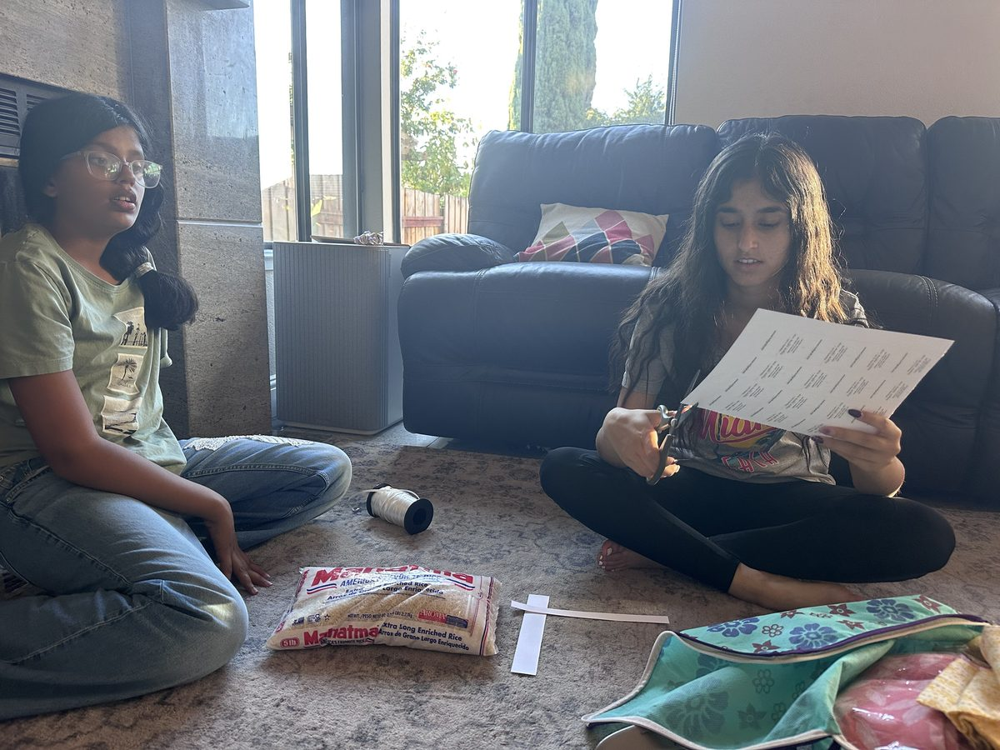

Comfort eye pillows for cancer-care and hospice teams, filled and finished by teen volunteers, under a kinder moon.
share & careEach eye pillow is filled with rice or soft polyfill, and finished with our tag: care instructions on the back, our promise on the front.
Recreated from the real printed tag attached to every pillow.
Nurses, hospice teams, and cancer-care staff carry everyone else's hardest days. These pillows are for them.
Comfort eye pillows delivered to the clinical team in Pleasant Hill.
40 comfort eye pillows delivered to the infusion care team, with a signed thank-you letter.
100 comfort eye pillows delivered to the GI Oncology team, with signed feedback on file.
125 comfort eye pillows delivered across two visits to Sutter care teams, with signed thank-you letters.
Our very first delivery: comfort eye pillows for the hospice care team near Osgood.
Comfort eye pillows delivered to the care team, one of our first deliveries.
We partner with cancer centers, hospices, and hospital units across the Bay Area. Get in touch →
Every delivery is signed for, and the teams write back with thank-you notes.
"Your kindness and support mean a great deal to our staff, especially our nurses and healthcare professionals who work tirelessly every day to care for our community. Your donation has made a positive impact on our team and has lifted spirits in a very meaningful way."
Sandy Amos, Washington Infusion Center
"Thank you so much for the kind and thoughtful gifts. We feel valued and renewed."
Kristan Wheeler, Physician Assistant, Stanford Cancer Center
Handwritten feedback on the signed acknowledgment form, August 14, 2026.
We've donated 500 comfort eye pillows to cancer-care and hospice teams so far. Sponsor the next batch and help us get to 1,000.
Sponsors 25 pillows. Restock a nurse break room.
Sponsors 50 pillows. Cover a hospital unit.
Sponsors 100 pillows. Supply a whole cancer center.
Kindroots Foundation is a 501(c)(3) public charity (EIN 39-2938402). Donations are tax-deductible to the extent allowed by law.
Our filling events bring middle and high schoolers together: an afternoon of rice, polyfill, funnels, stitching, and tagging. No experience needed.
Volunteer with us Request pillows for your team